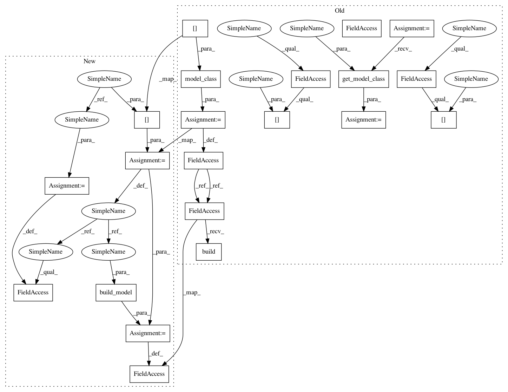

c0c834e3bd880f89e36ff1748623456fb98507e9,tests/models/test_vilbert.py,TestViLBertTorchscript,setUp,#TestViLBertTorchscript#,16
Before Change
args = test_utils.dummy_args(model=model_name)
configuration = Configuration(args)
config = configuration.get_config()
model_class = registry.get_model_class(model_name)
self.vision_feature_size = 1024
self.vision_target_size = 1279
config.model_config[model_name]["training_head_type"] = "pretraining"
config.model_config[model_name][
"visual_embedding_dim"
] = self.vision_feature_size
config.model_config[model_name]["v_feature_size"] = self.vision_feature_size
config.model_config[model_name]["v_target_size"] = self.vision_target_size
config.model_config[model_name]["dynamic_attention"] = False
self.pretrain_model = model_class(config.model_config[model_name])
self.pretrain_model.build()
config.model_config[model_name]["training_head_type"] = "classification"
config.model_config[model_name]["num_labels"] = 2
self.finetune_model = model_class(config.model_config[model_name])
self.finetune_model.build()
// TODO: fix windows unit test with python version of 3.6 and 3.8
@test_utils.skip_if_windows
def test_load_save_pretrain_model(self):
After Change
def setUp(self):
test_utils.setup_proxy()
setup_imports()
model_name = "vilbert"
args = test_utils.dummy_args(model=model_name)
configuration = Configuration(args)
config = configuration.get_config()
self.vision_feature_size = 1024
self.vision_target_size = 1279
model_config = config.model_config[model_name]
model_config["training_head_type"] = "pretraining"
model_config["visual_embedding_dim"] = self.vision_feature_size
model_config["v_feature_size"] = self.vision_feature_size
model_config["v_target_size"] = self.vision_target_size
model_config["dynamic_attention"] = False
model_config.model = model_name
self.pretrain_model = build_model(model_config)
model_config["training_head_type"] = "classification"
model_config["num_labels"] = 2
self.finetune_model = build_model(model_config)
// TODO: fix windows unit test with python version of 3.6 and 3.8
@test_utils.skip_if_windows
def test_load_save_pretrain_model(self):
In pattern: SUPERPATTERN
Frequency: 3
Non-data size: 21
Instances
Project Name: facebookresearch/pythia
Commit Name: c0c834e3bd880f89e36ff1748623456fb98507e9
Time: 2020-10-19
Author: apsdehal@gmail.com
File Name: tests/models/test_vilbert.py
Class Name: TestViLBertTorchscript
Method Name: setUp
Project Name: facebookresearch/pythia
Commit Name: c0c834e3bd880f89e36ff1748623456fb98507e9
Time: 2020-10-19
Author: apsdehal@gmail.com
File Name: tests/models/test_vilbert.py
Class Name: TestViLBertTorchscript
Method Name: setUp
Project Name: facebookresearch/pythia
Commit Name: c0c834e3bd880f89e36ff1748623456fb98507e9
Time: 2020-10-19
Author: apsdehal@gmail.com
File Name: tests/models/test_visual_bert.py
Class Name: TestVisualBertTorchscript
Method Name: setUp
Project Name: facebookresearch/pythia
Commit Name: c0c834e3bd880f89e36ff1748623456fb98507e9
Time: 2020-10-19
Author: apsdehal@gmail.com
File Name: tests/models/test_mmbt.py
Class Name: TestMMBTTorchscript
Method Name: setUp